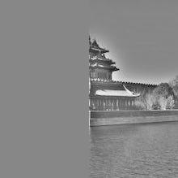

Fun with Filters and Frequencies
By Ruochen(Chloe) Liu
Part 1: Fun with Filters
Part 1.1: Finite Difference Operator
I first calculate the partial derivative in x and y of the cameraman image by convolving the image with finite difference operators D_x = [[1, 1]]and D_y = [[1], [-1]] , then I calculate the gradient magnitude, which is just np.sqrt(x_gradient**2 + y_gradient**2). And after some experiments, I find out the best threshold value (0.1) to detect the edges in the graph.

Partial Derivative in x

Partial Derivative in y

Gradient Magnitude
Egdes
Part 1.2: Derivative of Gaussian (DoG) Filter
In this part of the problem, I explore the use of gaussian filter. The first method I tried it to create a blurred version of the original image by convolving it with a gaussian filter and repeat the procedure in part 1.1; while in the second method, instead of applying the guassian filter and then taking the derivative of the image on x and y, I first convolve the 2D guassian with the finite difference operators D_x and D_y and later convolve the image with this derivative of the gaussian. We can see that these two methods give us the same result. Also note that applying the gaussian filter helps us remove lots of noise and make the edge graph clearer.
Edges detected by the first method
Partial Derivative of the gaussian in x
Partial Derivative of the gaussian in y
Edges detected by the second method
Part 1.3: Image Straightening
In this part of the problem, I try to straighten some images through the following steps:
- Crop a 2000*2000 square from the center of the original image;
- Rotate the image by the proposed rotation angle;
- Compute the gradient angle of the edges in the rotated image;
- Compute a histogram of the frequencies of these angles;
- Finally, pick the rotation with the maximum number of horizontal and vertical edges;

Original
Straightened (rotate -3)
Original

Straightened (rotate -10)
Original
Straightened (rotate -8)
Original
Straightened (not very successful)
Part 2: Fun with Frequencies!
Part 2.1: Image "Sharpening"
In this part of the problem, I try to sharpen some images using the unsharp masking technique.
- Use the Gaussian low pass filter to only retain the low fequencies of an image;
- Subtract the blurred version image from the original image to get the high frequencies of the image;
- Compute the gradient angle of the edges in the rotated image;
- Add the extracted high frequencies to the original image;
We can combine these into one operation: sharpened = original + alpha * (original - blurred)

Original
Sharpened (sigma=0.9)
Original
Sharpened (sigma=0.9)
For the evaluation purpose, I also tried blurring a sharp image and than try to sharpen it, but it turns out that our "sharpened" image cannot be as good as the original one.
Original
Blurred
"Sharpened"
Part 2.2: Hybrid Images
In this problem, I try to create hybrid images - hybrid images are static images that change in interpretation as a function of the viewing distance. The basic idea is that high frequency tends to dominate perception when it is available, but, at a distance, only the low frequency (smooth) part of the signal can be seen.
- Align the pair of images;
- Low-pass filter image one, subtract the blurred image from the original to get the high frequnecy portion;
- Low-pass filter image two;
- Add these two processed images; that is to say, add the high frequnecy portion of image one and the low frequency portion of image two;

Image 1

Image 2
Hybrid Image
Fourier analysis
Image 1
Image 2
High-pass Filted Image1
Low-pass Filted Image2
Hybrid Image
Other images
Image 1

Image 2
Hybrid Image
Image 1
Image 2
Hybrid Image
Part 2.3: Gaussian and Laplacian Stacks
In this problem, I implement Gaussian and Laplacian stacks and apply them to different images. For the Gaussian stack, I repeatedly convolve the image with the gaussian; and for the Laplacian stack, I repeatedly subtract the subsequent image on the Gaussian stack from the previous one.


Part 2.4: Multiresolution Blending (a.k.a. the oraple!)
The goal of this part of the assignment is to blend two images seamlessly using a multi resolution blending. The goal of this part of the assignment is to blend two images seamlessly using a multi resolution blending. To achieve this, I first calculate the Gaussian stack and Laplacian stack of the two images, and then apply a mask to each level of the two images' Laplacian stack as described in the 1983 paper by Burt and Adelson. Finally, I reconstruct blending image and sum up the result on each level.

Image 1

Image2
Mask
Right Image
Left Image
Blended Image


Image 1
Image2
Mask
Right Image
Left Image
Blended Image

This is an attempt with irregular mask.
Image 1
Image2
Mask

Learning and thoughts
I really like this project since it gives me some sense on how the filters and frequencies work for images. With these hand-on experience, I was able to understand those abstract theories and concepts much better.